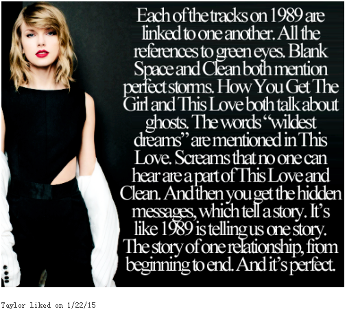
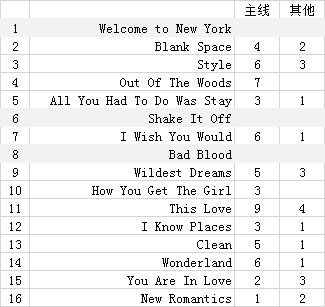

一、关联/相似
1. 每首歌之间的关联
2015年1月22号，TS在汤上点赞了这一条
Each of the tracks on 1989 are linked to one another. All the references to green eyes. Blank Space and Clean both mention perfect storms. How You Get the Girl and This Love both talk about ghosts. The words “wildest dreams” are mentioned in This Love. Screams that no one can hear are a part of This Love and Clean. And then you get the hidden messages, which tell a story. It's like 1989 is telling us one story. The story of one relationship, from beginning to end. And it's perfect.
1989中的每一首歌都是相互关联的
都与有着“绿眼睛”的人有关
Blank Space和Clean都提到了"perfect storms"
How You Get the Girl和This Love都谈到"ghosts"
"wildest dreams"这个词出现在This Love中
This Love和Clean中都有"Screams that no one can hear"的意思
再看看隐藏信息中给出的提示
1989给我们讲述了一个完整的故事，一段恋情，从开始到结束
太完美了
1989中，歌与歌之间的关联何止上述几处
与故事主线相关的歌词关联：
*这是一份疯狂不计后果的爱*
So it goes he can't keep his wild eyes on the road —— < Style >
Say you'll see me again even if it's just in your wildest dreams —— < Wildest Dreams >
In silent screams, in wildest dreams —— < This Love >
I wish you knew that I miss you too much to be mad anymore —— < I Wish You Would >
This mad mad love makes you come running —— < I Wish You Would >
And in the end in wonderland we both went mad —— < Wonderland >
Magic, madness, heaven, sin —— < Blank Space >
Cause we're young and we're reckless —— < Blank Space >
They loved each other recklessly —— < Out of The Woods的隐藏信息 >
*照片、亲吻、脸颊、红唇*
You took a Polaroid of us —— < Out of The Woods >
Let the flood carry away all my pictures of you —— < Clean >
And he keeps the picture of you in his office downtown —— < You Are in Love >
Pictures in frames of kisses on cheeks —— < How You Get the Girl >
Your kiss, my cheek, I watched you leave—— < This Love >
Red lips and rosy cheeks —— < Wildest Dreams >
I got that red lip classic thing that you like —— < Style >
*你的笑容、绿眼睛*
Didn't you calm my fears with a Cheshire cat smile —— < Wonderland >
Your smile, my ghost, I fell to my knees —— < This Love >
And you throw your head back laughing like a little kid ——< Begin Again(RED) >
Is green eyes and freckles and your smile —— < Everything Has Changed(RED) >
Didn't you flash your green eyes at me? —— < Wonderland >
In the dead of night, your eyes so green —— < I Know Places >
*被人围观、躲藏*
I can hear them whisper as we pass by It's a bad sign, bad sign —— < I Know Places >
But there were strangers watching, and whispers turned to talking, and talking turned to screams —— < Wonderland >
Makes you wanna run and hide then it makes you turn right back around —— < I Wish You Would >
They are the hunters, we are the foxes, and we run —— < I Know Places >
I know places we can hide —— < I Know Places >
I say no one has to know what we do —— < Wildest Dreams >
*你离开我*
All I know is that you drove us off the road —— < All You Had to Do Was Stay >
Then why'd you have to go and lock me out when I let you in —— < All You Had to Do Was Stay >
Makes you wanna run and hide then it makes you turn right back around —— < I Wish You Would >
This mad mad love makes you come running —— < I Wish You Would >
I reached for you but you were gone —— < Wonderland >
When you're young you just run —— < This Love >
And you were just gone and gone, gone and gone —— < This Love >
*分合纠缠*
People like you always want back the love they pushed aside —— < All You Had to Do Was Stay >
Broke your heart, I'll put it back together —— < How You Get the Girl >
Makes you wanna run and hide then it makes you turn right back around —— < I Wish You Would >
this love is alive back from the dead —— < This Love >
this love came back to me —— < This Love >
But you'll come back each time you leave —— < Blank Space >
We were built to fall apart then fall back together —— < Out of the Woods >
When we go crashing down, we come back every time —— < Style >
Watch us go round and round each time —— < Style >
It was months and months of back and forth —— < Clean >
*哭喊*
Screaming, crying, perfect storms —— < Blank Space >
When you started crying, baby, I did too —— < Out of The Woods >
In silent screams, in wildest dreams —— < This Love >
I screamed so loud but no one heard a thing —— < Clean >
We cry tears of mascara in the bathroom —— < New Romantics >
*痛苦的回忆/行尸走肉*
Stand there like a ghost shaking from the rain —— < How You Get the Girl >
Your smile, my ghost, I fell to my knees —— < This Love >
And for once you let go of your fears and your ghosts —— < You Are in Love >
*我不断在思考*
Can't stop thinking about you —— < Style >
Headlights pass the window pane, I think of you —— < I Wish You Would >
So we went on our way too in love to think straight —— < Wonderland >
The more I think about it now the less I know —— < All You Had to Do Was Stay >
And I remember thinking, are we out of the woods yet —— < Out of The Woods >
*爱情短暂、燃烧殆尽*
You and I got lost in it and we pretended it could last forever —— < Wonderland >
I thought heaven can't help me now nothing lasts forever —— < Wildest Dreams >
So it's gonna be forever or it's gonna go down in flames —— < Blank Space >
Love's a fragile little flame, it could burn out —— < I Know Places >
You see me in hindsight tangled up with you all night burning it down—— < Wildest Dreams >
Lantern, burning, flickered through the night for only you —— < This Love >
Long drive, but end in burning flames or paradise —— < Style >
*无尽的思念/怀念*
I wish you knew that I'll never forget you as long as I live —— < I Wish You Would >
I wish you knew that I miss you too much to be mad anymore —— < I Wish You Would >
We never go out of style —— < Style >
Just because you're clean don't mean you don't miss it —— < Clean >
*我放你自由*
These hands had to let it go free —— < This Love >
I walked out and said, "I'm setting you free" —— < Out of The Woods >
*Clean/Clear*
Are we in the clear yet —— < Out of The Woods >
I think I am finally clean —— < Clean >
其他方面的歌词关联：
*Dream*
Cause darling I'm a nightmare dressed like a daydream —— < Blank Space >
You got that James Dean day dream look in your eye —— < Style >
Say you'll see me again even if it's just in your wildest dreams —— < Wildest Dreams >
In silent screams, in wildest dreams —— < This Love >
But every night with us is like a dream —— < New Romantics >
*Hand*
Grab your passport and my hand —— < Blank Space >
Had me in the palm of your hand —— < All You Had to Do Was Stay >
Just grab my hand and don't ever drop it —— < I Know Places >
You stand with a hand on my waist line—— < I Know Places >
His hands are in my hair, his clothes are in my room —— < Wildest Dreams >
These hands had to let it go free —— < This Love >
Please take my hand —— < New Romantics >
*Water*
clear blue water, high tide, came and brought you in —— < This Love >
The water filled my lungs —— < Clean >
*Drive at Midnight*
Midnight, you come and pick me up, no head lights —— < Style >
Small talk, he drives, coffee at midnight—— < You Are in Love >
He drove past her street each night —— < I Wish You Would的隐藏信息 >
*Home*
Take me home —— < Style >
You can feel it on the way home —— < You Are in Love >
*Fear*
Didn't you calm my fears with the Cheshire cat smile —— < Wonderland >
And for once you let go of your fears and your ghosts —— < You Are in Love >
*Bad*
You look like bad news I gotta have you —— < 22(RED) >
He's so bad but he does it so well —— < Wildest Dreams >
this love Is good, this love is bad —— < This Love >
1989这张专辑统一的不仅是音乐风格，它讲述了一个完整的故事
这是一段恋情的经过和结束，以及新的开始
将以上相关联的歌做个统计
每首歌与其他歌在主线部分和其他部分关联次数如下
1989中大部分歌或多或少都与其他歌存在相同/相似描述部分
但是有这么几首几乎没有和其他歌关联，它们就是：
Welcome to New York
Shake it Off
Bad Blood
在1989这个完整故事中，这3首歌表达了自己独立的主题